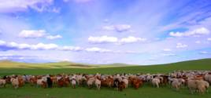
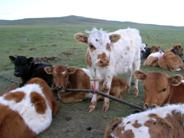
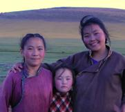
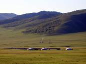
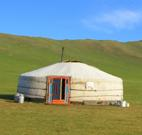

We are here to arrange custom trips for you during your time in Mongolia. Please contact us with your questions and needs.
Countryside Visit with Nomadic Family
We are pleased to make available to you a very special opportunity for a home stay with native Mongolians in the steppes outside of UlanBaatar. You will stay in a real ger (not the concrete floor, tourist version often found in tourist camps); observe the nomadic families’ activities; and also have the opportunity to hike and go on horse treks.
You will be able to experience the real nomadic way of life, yet at the same time, you won’t have to travel far to do it. Rather than spend much of your valuable time riding for days in a jeep or van across the countryside, you will be at your site within an hour or so. The drive there will be on actual roads, so it will be easier and more comfortable than a trek across the country.
The nomadic family has goats, sheep, and horses, and they milk all three of those animals! You will learn about their daily herding and milking activities, learn about the peoples’ traditional costumes, and see how traditional foods are made. You will eat with the family and enjoy the renowned Mongolian hospitality!
Because we are a small company, we can be flexible to suit your needs and desires. We recommend a stay of 2 to 3 nights in order to start understanding and feeling the nomadic pace of life. However, we can arrange for your stay to be shorter or longer to fit in with your itinerary.
We are excited to extend this opportunity to you, as it is an ideal way to achieve our goal of showing you the real Mongolian nomadic lifestyle in a way that is convenient and inexpensive for you. Please contact us to plan your countryside visit!
    
To Contact Us:
USA Phone: 218-201-0488 (Janlyn Gosse)
E-mail: Tsoogii2000mon@yahoo.com (Tsoogii)
Alternate E-mail: Janlyn@snowgoose.biz (Janlyn Gosse)